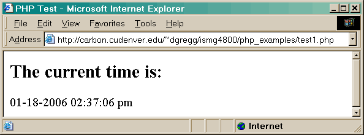
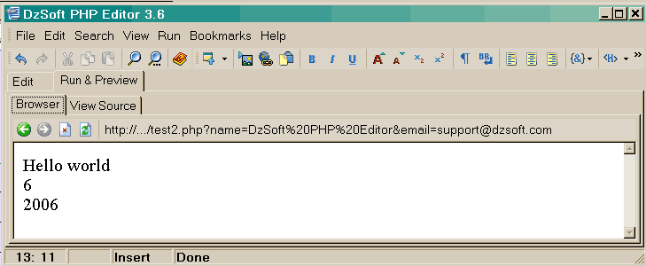
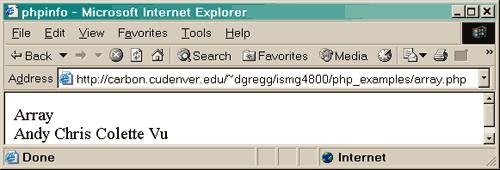
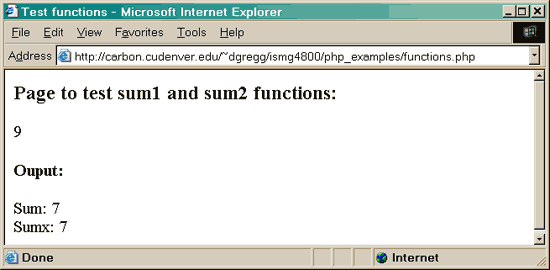
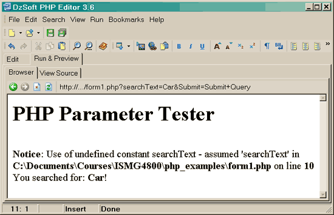
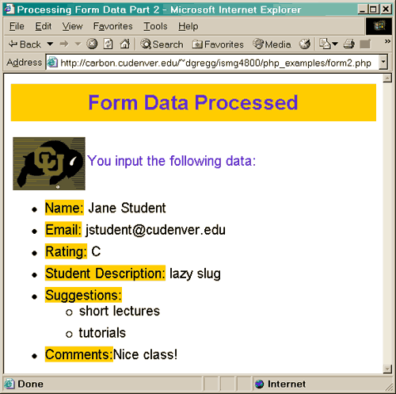

cgi-bin).
This directory is usually under direct control of the webmaster, prohibiting the average user from creating CGI programs.
As you may have realized, the PHP language revolves around the central theme of
practicality. PHP is about providing the programmer with the necessary tools to get
the job done in a quick and efficient fashion. Five important characteristics make
PHP's practical nature possible:
Familiarity
Simplicity
Efficiency
Security
Flexibility
One final characteristic makes PHP particularly interesting: it's free!
Programmers from many backgrounds will find themselves already accustomed to the PHP language. Many of the language's constructs are borrowed from C and Perl, and in many cases PHP code is almost indistinguishable from that found in the typical C or Pascal program. This minimizes the learning curve considerably.
A PHP script can consist of
10,000 lines or one line: whatever you need to get the job done. There is no need to
include libraries, special compilation directives, or anything of the sort. The
PHP engine simply begins executing the code after the first escape sequence (<?php)
and continues until it passes the closing escape sequence (?>).
If the code is syntactically correct, it will be executed exactly as it is
displayed.
Efficiency is an extremely important consideration for working in a multiuser environment such as the WWW. PHP 4.0 introduced resource allocation mechanisms and more pronounced support for object-oriented programming, in addition to session management features. Reference counting has also been introduced in the latest version, eliminating unnecessary memory allocation.
PHP provides developers and administrators with a flexible and efficient set of security safeguards. These safeguards can be divided into two frames of reference: system level and application level.
System-Level Security
Safeguards:
PHP furnishes a number of
security mechanisms that administrators can manipulate, providing for the maximum
amount of freedom and security when PHP is properly configured. PHP can be run
in what is known as safe mode,
which can limit users' attempts to exploit the PHP
implementation in many important ways. Limits can also be placed on maximum
execution time and memory usage, which if not controlled can have adverse affects on
server performance. Much as with a cgi-bin folder, administrators can also
place restrictions on the locations in which users can view and execute PHP scripts and
use PHP scripts to view guarded server information, such as the passwd file.
Application-Level Security
Safeguards
Several trusted data
encryption options are supported in PHP's predefined function set. PHP is also compatible
with many third-party applications, allowing for easy-integration with
secure ecommerce technologies. Another advantage is that the PHP source code is not
viewable through the browser because the script is completely parsed before it
is sent back to the requesting user. This benefit of PHP's server-side architecture
prevents the loss of creative scripts to users at least knowledgeable enough to
execute a 'View Source'.
Because PHP is an embedded language, it is extremely flexible towards meeting the needs of the developer. Although PHP is generally touted as being used in conjunction solely with HTML, it can also be integrated alongside languages like JavaScript, WML, XML, and many others. Additionally, as with most other mainstream languages, wisely planned PHP applications can be easily expanded as needed.
Browser dependency is not an issue because PHP scripts are compiled entirely on the server side before being sent to the user Since PHP contains no server-specific code, users are not limited to a specific and perhaps unfamiliar Web server. Apache, Microsoft IIs, Netscape Enterprise Server, Stronghold, and Zeus are all fair game for PHP's server integration. Because of the various platforms that these servers operate on, PHP is largely platform independent, available for such platforms as UNIX, Solaris, FreeBSD, and Windows 95/98/NT.
Finally, PHP offers access to external components, such as Enterprise Java Beans and Win32 COM objects. These newly added features put PHP in the big league, truly enabling developers to scale PHP projects upward and outward as need be.
The open source development strategy has gained considerable notoriety in the software industry. The prospect of releasing source code to the masses has resulted in undeniably positive outcomes for many projects, perhaps most notably Linux, although the success of the Apache project has certainly been a major contributor in proving the validity of the open source ideal. The same holds true for the developmental history of PHP, as users worldwide have been a huge factor in the advancement of the PHP project.
PHP's embracing of this open source strategy result in great performance gains for users, and the code is available free of charge. Additionally, an extremely receptive user community numbering in the thousands acts as "customer support," providing answers to even the most arcane questions in popular online discussion groups.
You cannot view the PHP source code by selecting "View source" in the browser - you will only see the output from the PHP file, which is plain HTML. This is because the scripts are executed on the server before the result is sent back to the browser.
<?php echo
"Hello World<br>"; ?>
<?php print
"Hello World<br>"; ?>
<?="Hello World"?><?php
and ?>, to include PHP code in the
page. date()
returns today's date (Just like in JavaScript except you need
to specify a format using the key letters m=month, d=date, y=2 digit
year, h=hour, i=minutes, s=seconds, a=am/pm)Once you have created the PHP you can run it directly from within a PHP editor/interpreter by clicking the "Run & Preview" button/tab and the program will run the code & display the result in the preview window.

$
sign. For example:$data and $Data
and $DATA would represent three different
variables.
| Operator | Description | Example | Result |
|---|---|---|---|
| + | Addition | x=2 x+2 |
4 |
| - | Subtraction | x=2 5-x |
3 |
| * | Multiplication | x=4 x*5 |
20 |
| / | Division | 15/5 5/2 |
3 2.5 |
| % | Modulus (division remainder) | 5%2 10%8 10%2 |
1 2 0 |
| ++ | Increment | x=5 x++ |
x=6 |
| -- | Decrement | x=5 x-- |
x=4 |
| Operator | Example | Is The Same As |
|---|---|---|
| = | x=y | x=y |
| += | x+=y | x=x+y |
| -= | x-=y | x=x-y |
| *= | x*=y | x=x*y |
| /= | x/=y | x=x/y |
| %= | x%=y | x=x%y |
| Operator | Description |
Example |
|---|---|---|
| == | is equal to | 5==8 returns false |
| != | is not equal | 5!=8 returns true |
| > | is greater than | 5>8 returns false |
| < | is less than | 5<8 returns true |
| >= | is greater than or equal to | 5>=8 returns false |
| <= | is less than or equal to | 5<=8 returns true |
| Operator | Description | Example |
|---|---|---|
| && | and | x=6 y=3 (x < 10 && y > 1) returns true |
| || | or | x=6 y=3 (x==5 || y==5) returns false |
| ! | not | x=6 y=3 !(x==y) returns true |
myVar. <br> to each line
printed.


// to make a single-line
comment or /* and */ to make a large comment block.Conditional statements in PHP are used to perform different actions based on different conditions.
$names[] = "Kevin"; $names[] = "Chris"; $names[] = "Colette"; $names[] = "Chinh";
$names = array("Kevin", "Chris", "Colette", "Chinh");

$names["a"] = "Adam"; $names["b"] = "Vu"; $names["c"] = "Todd"; $names["d"] = "Inna";Other syntax for the same thing...
$names=array("a"=>"Adam","b"=>"Vu","c"=>"Todd","d"=>"Inna");
for loop to
traverse it. Instead use foreach:


$sum outside of the function you'd get an error. The variable $sum does not exist
outside of the function. We can fix this as follows:$sumx) or by using the keyword global when we
declare a variable ($sum). $sum and $sumx still print
out their values (7) even when printed inside of ""!
$_GET (for form data sent via GET) and $_POST (for form data sent via POST). The
value is a String corresponding to
the value of the first occurrence of that parameter name. String is returned if
the parameter exists but has no value, and null is returned if there was no such parameter. 

demo.html)buffs.gif) to
display on php pagedemo.css).The resulting HTML pages would look like the one below:

name and email and comments. We can write them to a text file using the following code:// write data to a file
<?php
// Open a file for append, since I want to add this data to
// an existing data file. Must give full path to file:
$myfile = fopen ("/student6/dgregg/public_html/data.txt", "a");
$fp = fwrite($myfile,"$name,$email,$comment
");
?>
- Give a full path
"/student6/dgregg/public_html/data.txt"to the text file.- Change the permissions on the text file to allow it to be written to. To do this I:
- copied an empty text file named "data.txt" to my public_html folder on ouray using ftp,
telnet ouray.cudenver.edu(from Start -> Run on your desktop)cd public_html(this is the UNIX command to change directories)chmod 666 data.txt(this is the UNIX command to give read & write permission to everyone fordata.txt)pwd(this is the UNIX command to print the current directory - you can use this to figure out what the file location fordata.txtis)- To make each person's entry print on a separate line I included a carriage return in the " " for the string I wrote out using fwrite.
formFile.php  Online
Demo
Online
Demo  View
File
View
File
/student6/dgregg/public_html/data.txt",
"a");